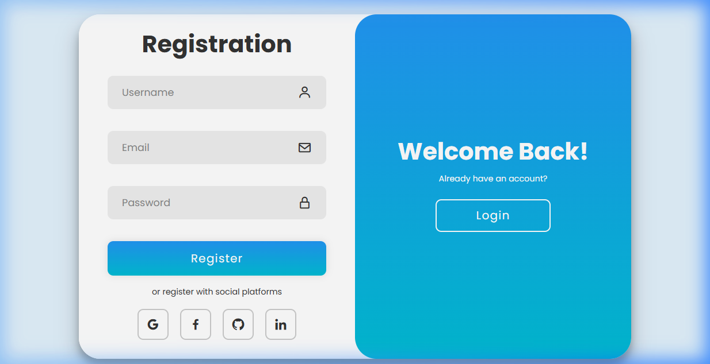
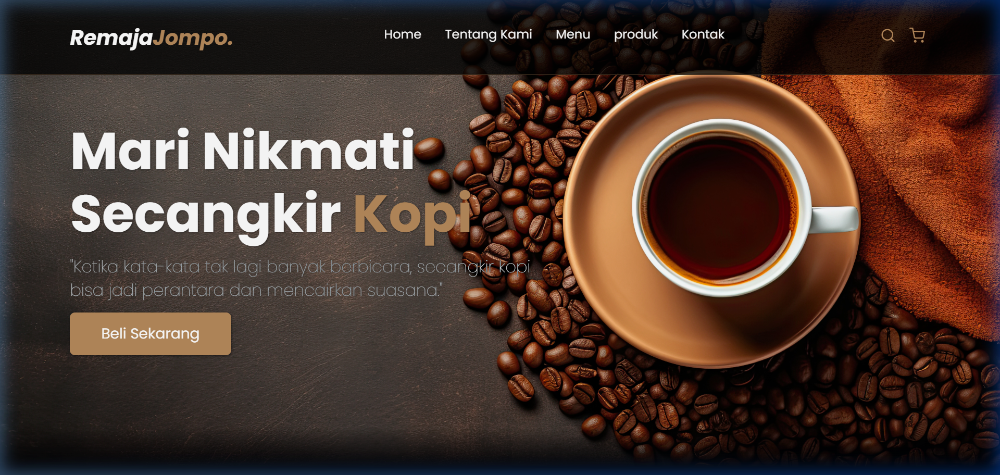

Halo, saya
Pahruroji.
Seorang
|
Saya seorang IT Support dan mahasiswa Sistem Informasi yang memiliki ketertarikan pada teknologi, khususnya Web Development dan Mobile Development.

Halo, saya
Saya seorang IT Support dan mahasiswa Sistem Informasi yang memiliki ketertarikan pada teknologi, khususnya Web Development dan Mobile Development.
Saya memiliki pengalaman di bidang IT Support, khususnya dalam jaringan komputer, troubleshooting perangkat, instalasi perangkat lunak, serta kebutuhan teknis operasional.
Selain itu, saya juga merupakan mahasiswa Sistem Informasi yang sedang mengembangkan kemampuan di bidang Web Development dan Mobile Development. Bagi saya, teknologi adalah bidang yang terus berkembang, sehingga saya terus belajar, mencoba hal baru, dan membangun project sederhana sebagai bagian dari proses pengembangan diri.
Jaringan komputer, troubleshooting perangkat, instalasi software, dan kebutuhan teknis operasional.
Mahasiswa Sistem Informasi yang terus belajar dan mengembangkan kemampuan di bidang teknologi.
Sedang belajar membangun website yang responsive, modern, dan mudah digunakan.
Sedang mengembangkan pemahaman dasar dalam pembuatan aplikasi mobile.

Halaman login dan registrasi dengan desain modern, animasi perpindahan form, serta fitur show/hide password.

Website landing page untuk kedai kopi yang menampilkan informasi brand, menu kopi, produk unggulan, kontak, serta detail produk.

Aplikasi monitoring dan manajemen operasional IT berbasis Flutter untuk mengelola data jaringan toko/cabang, memantau kondisi perangkat, dan mendukung proses troubleshooting.

Aplikasi desktop server penghubung antara Telegram Bot, Supabase, dan MikroTik untuk pengelolaan MAC Address jarak jauh.
Tertarik untuk berdiskusi, bekerja sama, atau melihat project saya lebih lanjut? Silakan hubungi saya melalui kontak berikut.

EDP NetOps adalah aplikasi monitoring dan manajemen operasional IT berbasis Flutter yang dibuat untuk membantu kebutuhan IT Support dan Network Operations. Aplikasi ini digunakan untuk mengelola data jaringan toko/cabang, memantau kondisi perangkat, mencatat riwayat tiket gangguan, serta menyediakan beberapa tools jaringan untuk mendukung proses troubleshooting secara lebih terstruktur.
Aplikasi ini dibuat untuk membantu proses monitoring jaringan dan pengelolaan data teknis toko/cabang agar pekerjaan IT Support menjadi lebih cepat, rapi, dan terpusat. Dengan adanya dashboard, data perangkat, riwayat tiket, dan tools jaringan, proses pengecekan gangguan dapat dilakukan dengan lebih efisien.